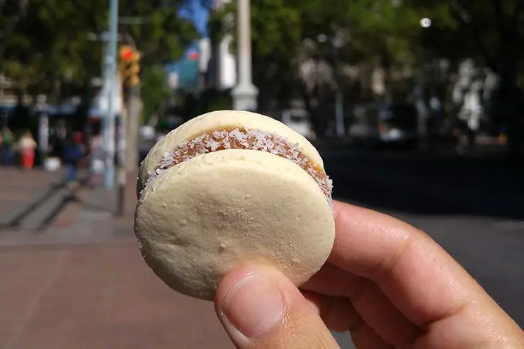
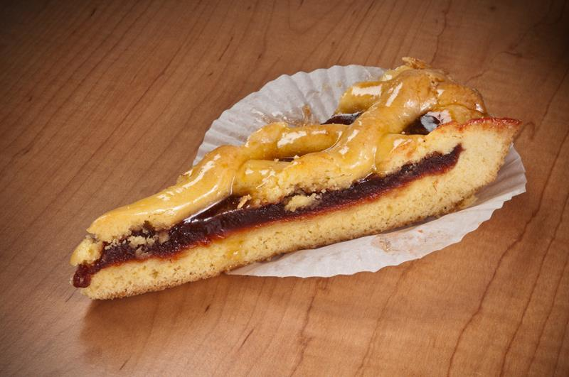

Trata-se de uma espécie de sanduíche bem recheado, com carne, ovo, queijo, presunto, maionese, alface, tomate, bacon, pimentão, azeitonas e o que mais estiver ao alcance do chef na hora do preparo.

Alfajor
O alfajor é um doce muito popular no Uruguai e na Argentina, feito com duas ou três camadas de massa recheadas com doce de leite e cobertas com chocolate ou coco ralado.

Pastafrola
A pastafrola é uma espécie de torta de massa quebrada muito comum no Uruguai e em outros países da América Latina. Geralmente é recheada com geleia, goiabada ou doce de leite.